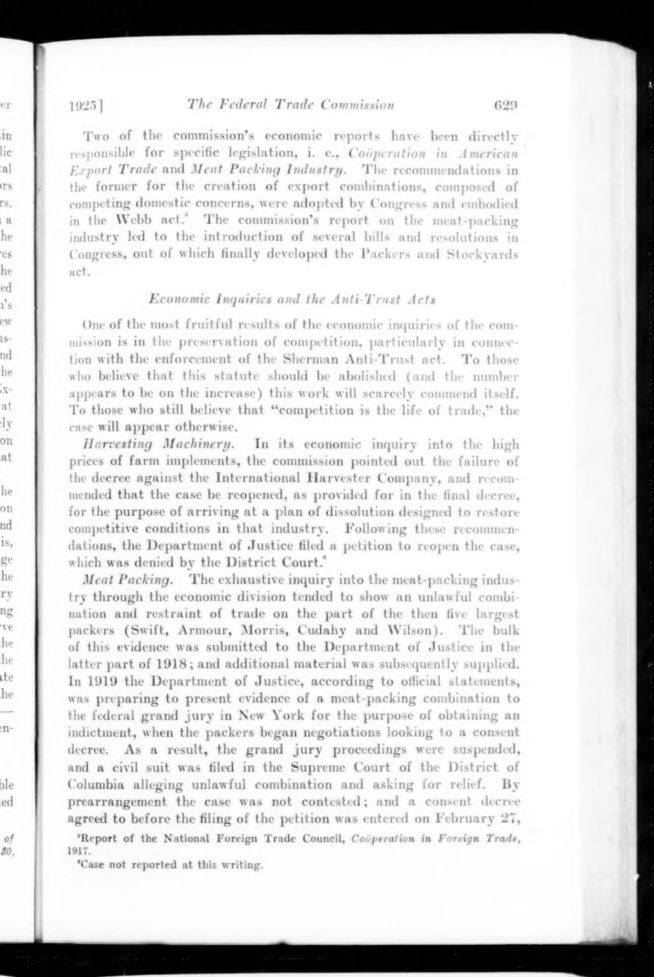

A Comissão de Comércio, os juros e as dívidas de guerra
Leitura: 13 min
Stevens avalia a Federal Trade Commission; Foreman separa eficiência de escassez no fundo de comércio; Llewellyn liga direito e economia; Snyder mede juros e ciclo; Moulton discute reparações.


De 1915 a 1924, a Federal Trade Commission recebeu 8.632 pedidos de ação do público. Arquivou 4.727 numa triagem sumária, emitiu 635 ordens para que empresas cessassem práticas condenadas e viu 53 delas contestadas nos tribunais de recursos até o fim de 1924, com mais derrotas que vitórias. W. H. S. Stevens, da University of Maryland, abre com esse balanço o número de dezembro de 1925 da American Economic Review, dez anos depois da posse dos primeiros comissários.
Os outros quatro artigos tratam de instituições e de medidas. C. J. Foreman, da University of Cincinnati, separa, no que juristas e contadores chamam de lucro do fundo de comércio, o ganho de eficiência do ganho de escassez. K. N. Llewellyn, da Faculdade de Direito de Yale, examina o que o direito faz à economia e o que a economia ensina ao direito. Carl Snyder mede quanto os juros pesam no ciclo de negócios. H. G. Moulton responde aos críticos de seus estudos sobre a capacidade alemã de pagar reparações. Duas comunicações, de J. M. Clark e de William E. Oberle, completam a parte principal.
O que a Federal Trade Commission fez em dez anos?
W. H. S. Stevens (University of Maryland) · “What Has the Federal Trade Commission Accomplished?” · pp. 625–651
Stevens parte das críticas que a comissão vinha recebendo e sustenta que muitas nasciam menos de falhas do que da impopularidade de suas decisões junto a grupos influentes. A lei de 1914 deu-lhe poder para coibir “métodos desleais de concorrência” e, pela lei Clayton, discriminação de preços, contratos de exclusividade, aquisições de ações e diretorias entrelaçadas; fora isso, restava o poder de investigar. O trabalho divide-se entre a divisão econômica, herdeira do Bureau of Corporations criado em 1904, e a divisão jurídica.
Dos inquéritos econômicos saíram leis, como a lei Webb, que permitiu associações de exportação, e a lei de frigoríficos e currais, nascida do relatório sobre a carne. O inquérito sobre o antracito, em 1917, levou a um sistema de acompanhamento de preços; até agosto daquele ano, segundo o autor, menos de um quarto de 1% do carvão foi vendido acima dos preços indicados pela comissão. Durante a guerra, a divisão entregou mais de 250 relatórios de custos. A tentativa de publicar estatísticas mensais de carvão e aço, iniciada em 1920 com verba de US$ 150 mil, foi barrada por ações judiciais das próprias indústrias.
Stevens explica as derrotas: o campo do direito é novo, os casos que chegam aos tribunais são os de fronteira, e, do ponto de vista do economista, algumas decisões são discutíveis. Em cinco campos, rotulagem enganosa, falsa representação, imitação de marca, propaganda enganosa e fixação de preço de revenda, as ordens foram mantidas, e eles somaram mais de 73% das queixas de 1923 e 1924. O artigo termina com as mudanças de março de 1925, que deixaram de publicar os acordos com as empresas, contra o voto de dois comissários, e com uma pergunta.
“Pode o defensor ou o adversário do sistema competitivo negar que a comissão travou o bom combate?” (“can either the advocate or the opponent of the competitive system honestly deny”)
Quanto do fundo de comércio é eficiência?
C. J. Foreman (University of Cincinnati) · “Computation of Good-Will Profits” · pp. 652–664
Foreman quer mostrar como se calculam os lucros atribuídos ao fundo de comércio, o good-will, e por que o cálculo importa. Para ele, juristas e contadores confundem duas coisas: o retorno da eficiência, fruto de custos menores e de organização, e o retorno da exploração, fruto de escassez, restrição e monopólio. A interpretação jurídica do good-will inclui quase todas as formas de lucro.
Os lucros correntes do fundo de comércio dividem-se em três classes. Há os de eficiência, como o de profissionais liberais, que os tribunais avaliam pouco porque não se transferem sem que o vendedor deixe de concorrer. Há os de escassez, quando a demanda eleva o preço acima do custo marginal; num caso inglês, uma cantina cujo prédio rendia £ 15 por ano foi alugada por mais £ 510 apenas pelo privilégio de vender bebida. E há o aumento de valor dos imóveis, que acaba como renda do proprietário. Ingleses e escoceses chegavam a tributar o good-will como aluguel.
Os contadores, diz Foreman, dividem-se em dois grupos: os que capitalizam o lucro líquido médio e os que capitalizam só o lucro acima de um retorno normal sobre o capital, como Hatfield e Kester. Mesmo estes não separam a recompensa da eficiência do ganho de escassez. A proposta final é restringir o conceito econômico de good-will ao lado da demanda e eliminar por lei os ganhos de exploração, para que o empresário dependa do esforço econômico verdadeiro.
Para o autor, ao aceitar práticas comerciais como base de suas decisões, os tribunais legalizam ganhos de combinação. Na formação da International Harvester, o plano inicial avaliava o good-will das empresas fundidas pelo lucro dos dois anos anteriores mais 10%, método que o Commissioner of Corporations descreveu como comum entre fabricantes.
O direito é freio ou ferramenta da economia?
K. N. Llewellyn (Yale University, School of Law) · “The Effect of Legal Institutions upon Economics” · pp. 665–683
O texto foi lido na reunião anual da American Economic Association em Chicago, em 30 de dezembro de 1924. Llewellyn observa um aparente paradoxo: os juristas pregavam algo próximo do determinismo econômico, enquanto Commons, em Legal Foundations of Capitalism, sublinhava o papel do direito na vida econômica. Para o autor, a diferença é de ênfase: o economista descobre que o direito é não só um obstáculo, mas uma ferramenta; não só um freio, mas um lubrificante.
“Não só um freio, mas um lubrificante.” (“not only a brake, but a lubricant”)
O ponto de partida é um princípio de escassez: a energia que a sociedade pode dedicar ao controle legal é limitada. Daí dois problemas, a engenharia jurídica, escolher os meios de controle mais baratos e eficazes, e a economia das políticas, porque cumprir uma significa sacrificar outra. A regulação de tarifas de serviços públicos funcionou melhor que o tabelamento de preços na guerra, sugere o autor, porque a demanda era estável e localizada e o controle, fácil de aplicar.
O problema central da época, diz Llewellyn, é governar atividades especializadas com regras gerais feitas por juízes que, em matéria técnica, são leigos. Os remédios são as leis, a administração especializada e, sobretudo, as regras feitas pelos próprios interessados: estatutos de associações, contratos padronizados e arbitragem, como na indústria do cinema. O artigo enumera ainda efeitos do direito sobre a economia, das instituições que tornam possíveis a concorrência e o crédito à transferência de riscos industriais para os custos das empresas, e termina reconhecendo o que o direito deve a conceitos econômicos como escassez e margem.
Entre os efeitos que enumera estão a troca do risco do comprador por uma garantia razoável do vendedor, que altera preços, e a indenização por acidentes de trabalho, que lança sobre a indústria custos antes ignorados. Aponta também um limite do direito feito por acordo: a integração entre produtores organizados pode ameaçar o consumidor desorganizado.
Os juros governam o ciclo de negócios?
Carl Snyder · “The Influence of the Interest Rate on the Business Cycle” · pp. 684–699
Snyder parte de uma constatação: discute-se a taxa de juros pela taxa do papel comercial de 60 a 90 dias, que se aplica a talvez 1% do dinheiro emprestado no país. Ele classifica os empréstimos por tipo, do dinheiro de call em Nova York às hipotecas rurais, e estima o total emprestado entre 120 e 130 bilhões de dólares, o que faria do crédito, talvez, a fonte de mais da metade do capital das empresas fora da agricultura. Inclui o crédito comercial entre fornecedores e clientes, que considera o mais influente para o ciclo e cuja taxa implícita pode chegar a 35% ao ano.
A maior parte desse dinheiro paga taxas estáveis. Milhares de bancos cobram 6% ou 7% ano após ano; com a exigência de saldo médio de cerca de 20%, o custo real chega a 7,5%. As taxas que oscilam muito valem para pequenas parcelas: o call money, que chegou a 100% em 1906 e 1907, raramente passou de 10% depois da guerra. Daí uma lei: a variabilidade das taxas é inversamente proporcional ao volume de recursos de cada grupo e ao prazo dos empréstimos.
Com um novo índice do volume de comércio, construído a partir dos débitos bancários e corrigido pelos preços, Snyder compara meio século de negócios e juros. As retomadas começam com juros em queda; a alta dos juros vem de dez a quinze meses depois; e o pico dos negócios chega antes do pico dos juros, às vezes dezoito meses ou dois anos antes. Nas tendências longas, os juros acompanham mais o nível de preços que qualquer outra influência. A conclusão é que o custo do dinheiro não é, em si, fator decisivo do ciclo, o que pesa sobre a ideia de estabilizar os negócios pela taxa de redesconto.
Quanto a Alemanha podia pagar?
H. G. Moulton · “War Debts and International Trade Theory” · pp. 700–716
Moulton, autor de estudos do Institute of Economics sobre as reparações alemãs, responde aos economistas que o acusaram de ignorar a teoria. Começa resumindo a versão de Taussig, de 1919: a pressão dos pagamentos deprecia o câmbio, baixa os preços internos em relação aos externos, estimula as exportações e cria um excedente igual às remessas. Nota que o próprio Taussig fazia ressalvas sobre tarifas e mercados, enquanto Frank D. Graham e B. M. Anderson descreviam o ajuste como quase automático.
A posição do instituto, diz Moulton, tem duas partes. Primeiro, só se paga com exportações de bens e serviços, e entregar títulos não elimina essa necessidade. Segundo, a Alemanha precisa de importações: para manter a população e as fábricas, cerca de 14 bilhões de marcos-ouro por ano, contra 6,2 bilhões importados em 1922. Ele nega ter dito que um excedente de exportações fosse impossível; diz que ele exigiria salários baixos e mercados que outros países teriam de aceitar.
Contra a teoria, Moulton levanta três objeções: só uma pequena parte do excesso de produção sobre o consumo pode tomar forma exportável; as dívidas de guerra não se parecem com empréstimos comerciais, que expandem a capacidade do devedor; e o recebimento traz perdas aos credores, como mostraram as entregas de carvão alemão à França para a indústria britânica. A depreciação estimula exportações, admite, mas também desorganiza moeda e orçamento. Conclui que não convém buscar uma lei de aplicação universal.
Moulton rejeita ainda a ideia de que um excedente orçamentário baixaria, por si, os preços alemães: o dinheiro arrecadado volta a circular quando os estrangeiros compram bens alemães, e muitos impostos são repassados aos preços. Para ele, a decisão do Comitê Dawes de administrar o câmbio de forma coordenada resume a lição da experiência europeia do pós-guerra.
Três dimensões bastam para a oferta e a procura?
J. M. Clark (University of Chicago) · “Further Discussion of Three-Dimensional Price Diagrams” · pp. 717–719
Na primeira comunicação, Clark comenta os diagramas tridimensionais de Silberling e de Wolfe e conclui que três dimensões continuam insuficientes para a complexidade da demanda e do custo. Contesta o uso da curva de linha de massa como curva de oferta e de custo marginal, a ideia de que, numa indústria de custos crescentes, a demanda maior possa baixar a curva de oferta, e a tese de que pôr custo marginal contra demanda envolva raciocínio circular.
Como regular as tarifas dos serviços públicos?
William E. Oberle (Filadélfia) · “Regulating Public Utility Rates” · pp. 719–720
Na segunda, Oberle questiona a regulação baseada no valor do investimento. A avaliação federal das ferrovias já custara US$ 100 milhões ao público, e ele propõe comparar o lucro com o custo total de prestar o serviço, entre empresas e entre setores, para premiar a eficiência e não o capital.
O que mais há na edição?
As resenhas abrem com Allyn A. Young sobre os três volumes de artigos de F. Y. Edgeworth e com Frank H. Knight sobre a história da sociologia de Small. Seguem-se resenhas de livros de história econômica, agricultura, bancos e finanças públicas, entre elas a de E. M. Patterson sobre as dívidas interaliadas e notas de O. Ingraham sobre livros de D. T. Jack e de J. M. Keynes a respeito do padrão-ouro britânico. Na seção de documentos, R. D. Kilborne estuda a War Finance Corporation, criada em 1918 com capital de US$ 500 milhões. As notas anunciam a reunião anual em Nova York, de 28 a 31 de dezembro de 1925.
Na minha leitura
Na minha leitura, o número inteiro discute a distância entre teoria e instituições. Stevens mede uma agência pela sua produção de fatos e de ordens; Foreman pede que o direito e a contabilidade separem eficiência de escassez; Llewellyn trata o direito como engenharia sujeita a custos; Snyder mostra que a taxa de juros que todos observam é marginal, e a que pesa no balanço das empresas quase não varia; Moulton argumenta que o mecanismo clássico de ajuste supõe uma economia sem importações indispensáveis. Em todos, a pergunta é a mesma: o que muda quando se olha o funcionamento efetivo da instituição, e não o modelo.
Glossário
- Federal Trade Commission
- agência federal americana criada em 1914 para coibir métodos desleais de concorrência.
- Ordem de cessação
- determinação para que uma empresa pare uma prática considerada ilegal.
- Good-will
- fundo de comércio; valor ligado à clientela, ao nome e à localização de um negócio.
- Call money
- empréstimo diário a corretores, garantido por ações, com taxa muito variável.
- Papel comercial
- nota promissória de curto prazo emitida por empresas.
- Excedente de exportações
- valor das exportações acima das importações.
- Problema da transferência
- dificuldade de converter recursos internos em pagamentos ao exterior.
- Arbitragem
- solução de disputas por árbitros escolhidos pelas partes.
Artigos (5)
- What Has the Federal Trade Commission Accomplished? — W. H. S. Stevens (University of Maryland) (pp. 625–651) · resenha acima · comentário completo
- Computation of Good-Will Profits — C. J. Foreman (University of Cincinnati) (pp. 652–664) · resenha acima · comentário completo
- The Effect of Legal Institutions upon Economics — K. N. Llewellyn (Yale University, School of Law) (pp. 665–683) · resenha acima · comentário completo
- The Influence of the Interest Rate on the Business Cycle — Carl Snyder (Nova York) (pp. 684–699) · resenha acima · comentário completo
- War Debts and International Trade Theory — H. G. Moulton (Washington, D.C.) (pp. 700–716) · resenha acima · comentário completo
Resenhas (52)
- Edgeworth, Papers Relating to Political Economy — A. A. Young (Harvard University) (pp. 721–724). Resenha dos três volumes de artigos reunidos de F. Y. Edgeworth.
- Small, Origins of Sociology — F. H. Knight (University of Iowa) (pp. 724–727). Resenha da história da sociologia de Albion W. Small.
- Halberstaedter, Die Problematik des wirtschaftlichen Prinzips — R. R. Whitehead (p. 727). Nota de R. R. Whitehead.
- Keller, Starting-Points in Social Science — M. G. Smith (p. 728). Nota de M. G. Smith.
- Moriarty, Economics for Citizenship — J. Ise (p. 728). Nota de J. Ise sobre manual para o ensino secundário.
- Mukerjee, Principles of Comparative Economics — D. S. T. (p. 728). Nota sobre obra de economia comparada.
- Spillman e Lang, The Law of Diminishing Returns — M. A. Copeland (p. 729). Nota de M. A. Copeland.
- Spykman, The Social Theory of Georg Simmel — M. G. Smith (p. 730). Nota de M. G. Smith.
- Masse, La Production des Richesses — J. E. Le Rossignol (pp. 731–734). Resenha de J. E. Le Rossignol.
- Das, Production in India — W. I. King (pp. 734–736). Resenha de W. I. King.
- Barnes, The New History and the Social Studies — A. P. Usher (Harvard University) (pp. 736–737). Resenha de A. P. Usher.
- Bowden, Industrial Society in England towards the End of the Eighteenth Century — A. P. Usher (p. 738). Nota de A. P. Usher.
- Pantaleoni, La Crisi del 1905-1907 — R. F. Foerster (p. 739). Nota de R. F. Foerster.
- Sée, L’Évolution Commerciale et Industrielle de la France sous l’Ancien Régime — A. P. U. (p. 741). Nota de A. P. U.
- Sée, La France Économique et Sociale au XVIIIe Siècle — A. P. U. (p. 741). Nota de A. P. U.
- Bidwell e Falconer, History of Agriculture in the Northern United States — L. B. Schmidt (pp. 742–744). Resenha de L. B. Schmidt.
- Gras, A History of Agriculture in Europe and America — C. W. Wright (p. 745). Nota de C. W. Wright.
- Jagtiani, The Role of the State in the Provision of Railways — E. Jones (p. 747). Nota de E. Jones.
- Culbertson, International Economic Policies — P. S. Peirce (p. 749). Nota de P. S. Peirce.
- Curtis e Cooper, Mathematics of Accounting — A. W. H. (p. 752). Nota de A. W. H.
- Gaines, The Art of Investment — D. S. T. (p. 753). Nota de D. S. T.
- Kester, Depreciation — A. W. H. (p. 753). Nota de A. W. H.
- Pinkerton, Accounting for Surplus — A. W. H. (p. 755). Nota de A. W. H.
- Poffenberger, Psychology in Advertising — C. L. Stone (p. 755). Nota de C. L. Stone.
- Stockwell, How to Read a Financial Statement — E. A. Saliers (p. 755). Nota de E. A. Saliers.
- Tosdal, Problems in Sales Management — V. H. P. (p. 756). Nota de V. H. P.
- Vaughan, Economics of Our Patent System — M. N. Nelson (p. 756). Nota de M. N. Nelson.
- Galster, The Labor Movement in the Shoe Industry — E. J. Miller (p. 759). Nota de E. J. Miller.
- Gulick, Labor Policy of the United States Steel Corporation — G. M. Janes (p. 760). Nota de G. M. Janes.
- Hackett, Health Maintenance in Industry — W. Wright (p. 760). Nota de W. Wright.
- Supino, Le Basi Economiche del Movimento Operaio — A. Graziani (p. 761). Nota de A. Graziani.
- Clark e Chase, Elements of the Modern Building and Loan Associations — R. S. Meriam (pp. 762–764). Resenha de R. S. Meriam.
- Bergengren, Coöperative Banking — Donald S. Tucker (p. 765). Nota de Donald S. Tucker.
- Darling, The Punjab Peasant in Prosperity and Debt — A. P. U. (p. 765). Nota de A. P. U.
- Jack, The Economics of the Gold Standard — O. Ingraham (p. 766). Nota de O. Ingraham.
- Keynes, The Economic Consequences of Sterling Parity — O. Ingraham (p. 766). Nota de O. Ingraham.
- Olson e Hallman, Credit Management — M. J. Shugrue (p. 767). Nota de M. J. Shugrue.
- Scroggs, A Century of Banking Progress — M. J. S. (p. 768). Nota de M. J. S.
- Topliff, The Bank of North Dakota — I. Lippincott (p. 768). Nota de I. Lippincott.
- The Inter-Ally Debts and the United States — E. M. Patterson (pp. 769–772). Resenha de E. M. Patterson.
- Meisel, Britische und Deutsche Einkommensteuer — A. Comstock (p. 773). Nota de A. Comstock.
- Shirras, The Science of Public Finance — F. Flugel (p. 775). Nota de F. Flugel.
- Vakil, Financial Developments in Modern India — H. L. Reed (p. 775). Nota de H. L. Reed.
- Coletti, La Popolazione Rurale in Italia — A. G. (p. 777). Nota de A. G.
- Narain, The Population of India — A. B. Wolfe (p. 777). Nota de A. B. Wolfe.
- Richmond e Hall, Child Marriages — A. B. Wolfe (p. 778). Nota de A. B. Wolfe.
- Virgilii, Il Problema della Popolazione — A. G. (p. 778). Nota de A. G.
- Woofter, The Basis of Racial Adjustment — A. B. W. (p. 778). Nota de A. B. W.
- Burnett-Hurst, Labor and Housing in Bombay — A. P. U. (p. 779). Nota de A. P. U.
- Pruette, Women and Leisure — M. K. (p. 780). Nota de M. K.
- Bouglé, Le Solidarisme — R. R. Whitehead (p. 782). Nota de R. R. Whitehead.
- Notizie Statistiche sul Raccolto Bozzoli d’Italia del 1924 — R. F. F. (p. 784). Nota de R. F. F. sobre anuário estatístico da produção italiana de casulos.
Novos livros (17)
- New Books (pp. 727–731). Lista de livros novos, com notas breves, sobre obras gerais, teoria e sua história.
- New Books (pp. 738–742). Lista de livros novos, com notas breves, sobre história e geografia econômica.
- New Books (pp. 744–746). Lista de livros novos, com notas breves, sobre agricultura, mineração, silvicultura e pesca.
- New Books (pp. 746–747). Lista de livros novos sobre indústrias manufatureiras.
- New Books (pp. 747–749). Lista de livros novos, com notas breves, sobre transporte e comunicação.
- New Books (pp. 749–751). Lista de livros novos, com notas breves, sobre comércio e crises comerciais.
- New Books (pp. 751–758). Lista de livros novos, com notas breves, sobre contabilidade, métodos de negócios, investimentos e bolsas.
- New Books (pp. 758–759). Lista de livros novos sobre capital e organização capitalista.
- New Books (pp. 759–762). Lista de livros novos, com notas breves, sobre trabalho e organizações de trabalhadores.
- New Books (pp. 764–769). Lista de livros novos, com notas breves, sobre moeda, preços, crédito e bancos.
- New Books (pp. 772–777). Lista de livros novos, com notas breves, sobre finanças públicas, tributação e tarifa.
- New Books (pp. 777–779). Lista de livros novos, com notas breves, sobre população e migração.
- New Books (pp. 779–781). Lista de livros novos, com notas breves, sobre problemas sociais e reformas.
- New Books (pp. 781–782). Lista de livros novos sobre seguros e pensões.
- New Books (p. 782). Lista de livros novos sobre pauperismo, caridade e assistência.
- New Books (pp. 782–783). Lista de livros novos, com notas breves, sobre socialismo e cooperativas.
- New Books (pp. 783–784). Lista de livros novos, com notas breves, sobre estatística e seus métodos.
Documentos, periódicos e notas (7)
- Further Discussion of Three-Dimensional Price Diagrams — J. M. Clark (University of Chicago) (pp. 717–719). Comunicação que discute os diagramas tridimensionais de Silberling e Wolfe e contesta o uso da curva de linha de massa como curva de oferta e de custo marginal. · ler o comentário
- Regulating Public Utility Rates — William E. Oberle (Filadélfia) (pp. 719–720). Comunicação que propõe regular tarifas pela relação entre lucro e custo do serviço, e não pelo valor do investimento. · ler o comentário
- Periodicals (pp. 785–809). Resumos de artigos de periódicos, por área.
- Documents, Reports, and Legislation: The War Finance Corporation — R. D. Kilborne (pp. 810–820). Estudo da lei de 1918 que criou a War Finance Corporation e de suas operações de crédito.
- Documents, Reports, and Legislation: Industries and Commerce (pp. 821–822). Relação de relatórios oficiais sobre indústrias e comércio.
- Documents, Reports, and Legislation: Corporations (p. 822). Relação de relatórios sobre avaliação de ferrovias e serviços públicos.
- Notes (pp. 823–832). Notícias, programa da reunião anual de Nova York e nomeações.
Fontes
- What Has the Federal Trade Commission Accomplished? (pp. 625–651). Internet Archive (número completo, PDF)
- Computation of Good-Will Profits (pp. 652–664). Internet Archive (número completo, PDF)
- The Effect of Legal Institutions upon Economics (pp. 665–683). Internet Archive (número completo, PDF)
- The Influence of the Interest Rate on the Business Cycle (pp. 684–699). Internet Archive (número completo, PDF)
- War Debts and International Trade Theory (pp. 700–716). Internet Archive (número completo, PDF)
- Further Discussion of Three-Dimensional Price Diagrams: A Communication (pp. 717–719). Internet Archive (número completo, PDF)
- Regulating Public Utility Rates: A Communication (pp. 719–720). Internet Archive (número completo, PDF)
- Review: Papers Relating to Political Economy by Edgeworth (pp. 721–724). Internet Archive (número completo, PDF)
- Review: Origins of Sociology by Small (pp. 724–727). Internet Archive (número completo, PDF)
- New Books: General Works, Theory and Its History (pp. 727–731). Internet Archive (número completo, PDF)
- Review: Die Problematik des wirtschaftlichen Prinzips by Halberstaedter (p. 727). Internet Archive (número completo, PDF)
- Review: Starting-Points in Social Science by Keller (p. 728). Internet Archive (número completo, PDF)
- Review: Economics for Citizenship by Moriarty (p. 728). Internet Archive (número completo, PDF)
- Review: Principles of Comparative Economics by Mukerjee (p. 728). Internet Archive (número completo, PDF)
- Review: The Law of Diminishing Returns by Spillman and Lang (p. 729). Internet Archive (número completo, PDF)
- Review: The Social Theory of Georg Simmel by Spykman (p. 730). Internet Archive (número completo, PDF)
- Review: La Production des Richesses by Masse (pp. 731–734). Internet Archive (número completo, PDF)
- Review: Production in India by Das (pp. 734–736). Internet Archive (número completo, PDF)
- Review: The New History and the Social Studies by Barnes (pp. 736–737). Internet Archive (número completo, PDF)
- New Books: Economic History and Geography (pp. 738–742). Internet Archive (número completo, PDF)
- Review: Industrial Society in England towards the End of the Eighteenth Century by Bowden (p. 738). Internet Archive (número completo, PDF)
- Review: La Crisi del 1905-1907 by Pantaleoni (p. 739). Internet Archive (número completo, PDF)
- Review: L’Évolution Commerciale et Industrielle de la France sous l’Ancien Régime by Sée (p. 741). Internet Archive (número completo, PDF)
- Review: La France Économique et Sociale au XVIIIe Siècle by Sée (p. 741). Internet Archive (número completo, PDF)
- Review: History of Agriculture in the Northern United States by Bidwell and Falconer (pp. 742–744). Internet Archive (número completo, PDF)
- New Books: Agriculture, Mining, Forestry, and Fisheries (pp. 744–746). Internet Archive (número completo, PDF)
- Review: A History of Agriculture in Europe and America by Gras (p. 745). Internet Archive (número completo, PDF)
- New Books: Manufacturing Industries (pp. 746–747). Internet Archive (número completo, PDF)
- New Books: Transportation and Communication (pp. 747–749). Internet Archive (número completo, PDF)
- Review: The Role of the State in the Provision of Railways by Jagtiani (p. 747). Internet Archive (número completo, PDF)
- New Books: Trade, Commerce, and Commercial Crises (pp. 749–751). Internet Archive (número completo, PDF)
- Review: International Economic Policies by Culbertson (p. 749). Internet Archive (número completo, PDF)
- New Books: Accounting, Business Methods, Investments, and the Exchanges (pp. 751–758). Internet Archive (número completo, PDF)
- Review: Mathematics of Accounting by Curtis and Cooper (p. 752). Internet Archive (número completo, PDF)
- Review: The Art of Investment by Gaines (p. 753). Internet Archive (número completo, PDF)
- Review: Depreciation by Kester (p. 753). Internet Archive (número completo, PDF)
- Review: Accounting for Surplus by Pinkerton (p. 755). Internet Archive (número completo, PDF)
- Review: Psychology in Advertising by Poffenberger (p. 755). Internet Archive (número completo, PDF)
- Review: How to Read a Financial Statement by Stockwell (p. 755). Internet Archive (número completo, PDF)
- Review: Problems in Sales Management by Tosdal (p. 756). Internet Archive (número completo, PDF)
- Review: Economics of Our Patent System by Vaughan (p. 756). Internet Archive (número completo, PDF)
- New Books: Capital and Capitalistic Organization (pp. 758–759). Internet Archive (número completo, PDF)
- New Books: Labor and Labor Organizations (pp. 759–762). Internet Archive (número completo, PDF)
- Review: The Labor Movement in the Shoe Industry by Galster (p. 759). Internet Archive (número completo, PDF)
- Review: Labor Policy of the United States Steel Corporation by Gulick (p. 760). Internet Archive (número completo, PDF)
- Review: Health Maintenance in Industry by Hackett (p. 760). Internet Archive (número completo, PDF)
- Review: Le Basi Economiche del Movimento Operaio by Supino (p. 761). Internet Archive (número completo, PDF)
- Review: Elements of the Modern Building and Loan Associations by Clark and Chase (pp. 762–764). Internet Archive (número completo, PDF)
- New Books: Money, Prices, Credit, and Banking (pp. 764–769). Internet Archive (número completo, PDF)
- Review: Coöperative Banking by Bergengren (p. 765). Internet Archive (número completo, PDF)
- Review: The Punjab Peasant in Prosperity and Debt by Darling (p. 765). Internet Archive (número completo, PDF)
- Review: The Economics of the Gold Standard by Jack (p. 766). Internet Archive (número completo, PDF)
- Review: The Economic Consequences of Sterling Parity by Keynes (p. 766). Internet Archive (número completo, PDF)
- Review: Credit Management by Olson and Hallman (p. 767). Internet Archive (número completo, PDF)
- Review: A Century of Banking Progress by Scroggs (p. 768). Internet Archive (número completo, PDF)
- Review: The Bank of North Dakota by Topliff (p. 768). Internet Archive (número completo, PDF)
- Review: The Inter-Ally Debts and the United States (pp. 769–772). Internet Archive (número completo, PDF)
- New Books: Public Finance, Taxation, and Tariff (pp. 772–777). Internet Archive (número completo, PDF)
- Review: Britische und Deutsche Einkommensteuer by Meisel (p. 773). Internet Archive (número completo, PDF)
- Review: The Science of Public Finance by Shirras (p. 775). Internet Archive (número completo, PDF)
- Review: Financial Developments in Modern India by Vakil (p. 775). Internet Archive (número completo, PDF)
- New Books: Population and Migration (pp. 777–779). Internet Archive (número completo, PDF)
- Review: La Popolazione Rurale in Italia by Coletti (p. 777). Internet Archive (número completo, PDF)
- Review: The Population of India by Narain (p. 777). Internet Archive (número completo, PDF)
- Review: Child Marriages by Richmond and Hall (p. 778). Internet Archive (número completo, PDF)
- Review: Il Problema della Popolazione by Virgilii (p. 778). Internet Archive (número completo, PDF)
- Review: The Basis of Racial Adjustment by Woofter (p. 778). Internet Archive (número completo, PDF)
- New Books: Social Problems and Reforms (pp. 779–781). Internet Archive (número completo, PDF)
- Review: Labor and Housing in Bombay by Burnett-Hurst (p. 779). Internet Archive (número completo, PDF)
- Review: Women and Leisure by Pruette (p. 780). Internet Archive (número completo, PDF)
- New Books: Insurance and Pensions (pp. 781–782). Internet Archive (número completo, PDF)
- New Books: Pauperism, Charities, and Relief Measures (p. 782). Internet Archive (número completo, PDF)
- New Books: Socialism and Co-operative Enterprises (pp. 782–783). Internet Archive (número completo, PDF)
- Review: Le Solidarisme by Bouglé (p. 782). Internet Archive (número completo, PDF)
- New Books: Statistics and Its Methods (pp. 783–784). Internet Archive (número completo, PDF)
- Review: Notizie Statistiche sul Raccolto Bozzoli d’Italia del 1924 (p. 784). Internet Archive (número completo, PDF)
- Periodicals (pp. 785–809). Internet Archive (número completo, PDF)
- Documents, Reports, and Legislation: The War Finance Corporation (pp. 810–820). Internet Archive (número completo, PDF)
- Documents, Reports, and Legislation: Industries and Commerce (pp. 821–822). Internet Archive (número completo, PDF)
- Documents, Reports, and Legislation: Corporations (p. 822). Internet Archive (número completo, PDF)
- Notes (pp. 823–832). Internet Archive (número completo, PDF)
- Número completo digitalizado (domínio público): Internet Archive.
Documento em domínio público (EUA, publicado antes de 1931), via JSTOR Early Journal Content e Internet Archive. Resumo e comentário do autor deste site, sem afiliação com a American Economic Association. Encontrou um erro? Escreva: a correção é publicada no próprio texto, com data.
← Nº 193 · Milho, ações e suínos: uma fórmula para prever o preço, 1925 Nº 195 · Young e a guerra econômica, Knight lê Pigou, Wolfe lê Cassel →